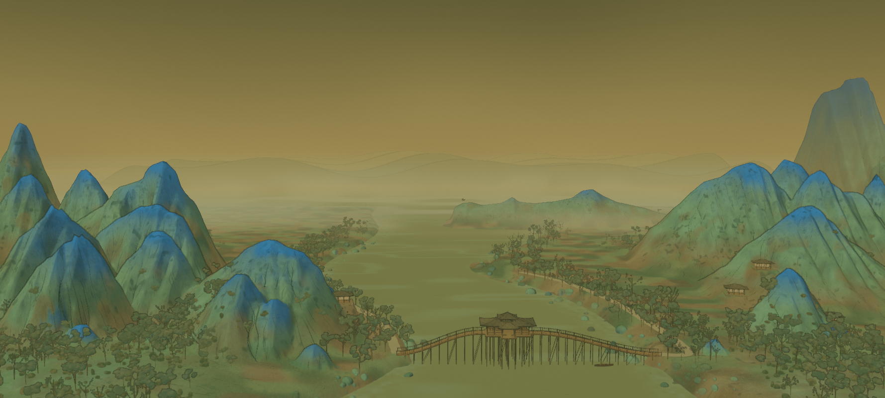
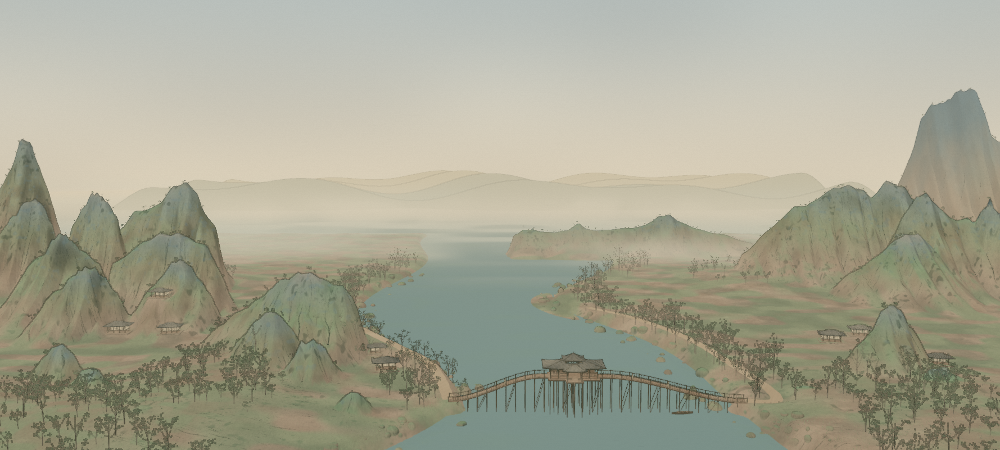
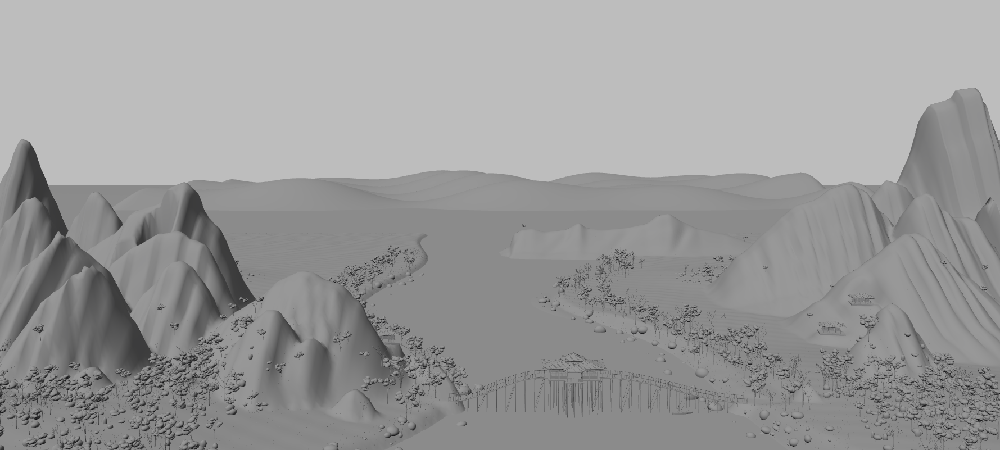
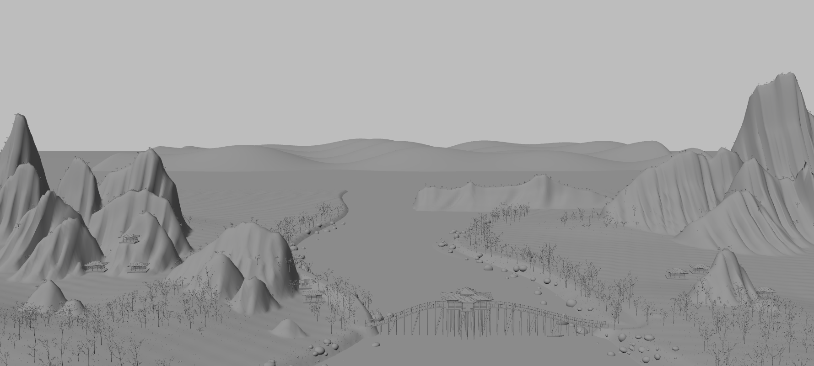
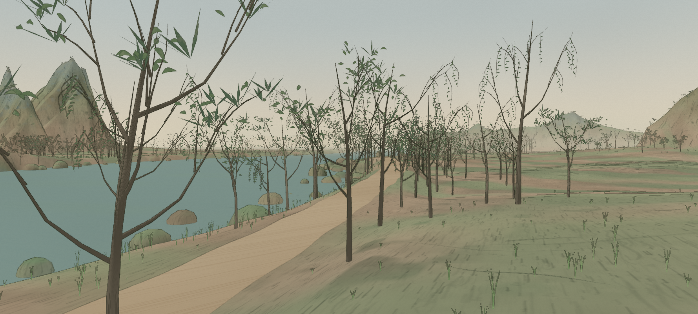
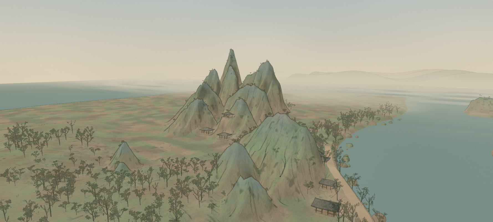
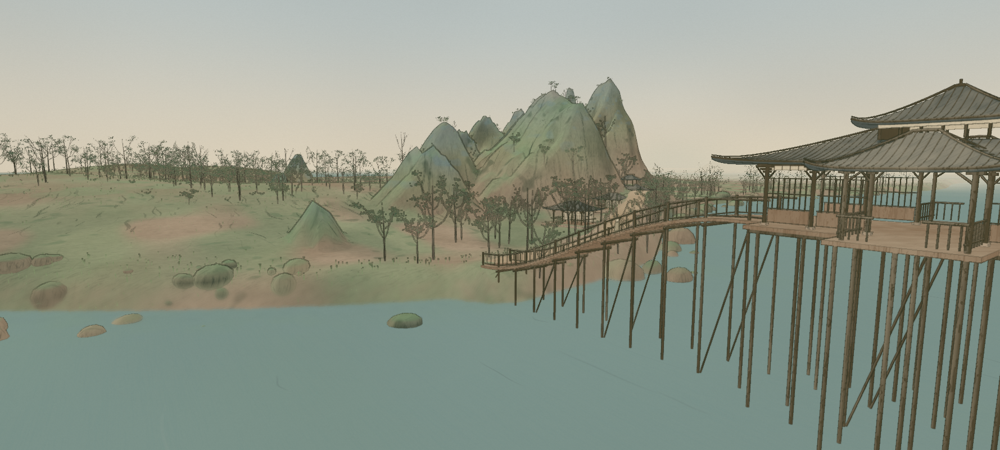
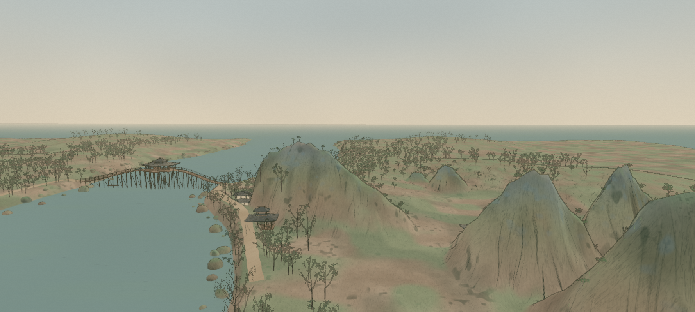

Closer forms. Quieter color.
Mountain feet now guide the depth of the ridges, exposing the smaller overlapping hills. Open branch forks and pointed leaf sprays replace round crowns; sparse trees and grass break the high crest lines. Sage, slate and weathered earth sit against a warm paper horizon.
All comparisons use the same camera, image dimensions and scene time. The source guides the shapes; the more natural palette is an intentional change from its mineral colors.

The whole passage




Shape without pigment




Branches and ridge detail




Inspect the approach and reverse side




This is an editable 3D interpretation. The mountain depths and hidden faces are inferred; the reference is not projected onto the model. Earlier films and GLB exports remain records of their saved versions. Geometry checks · Scene checks